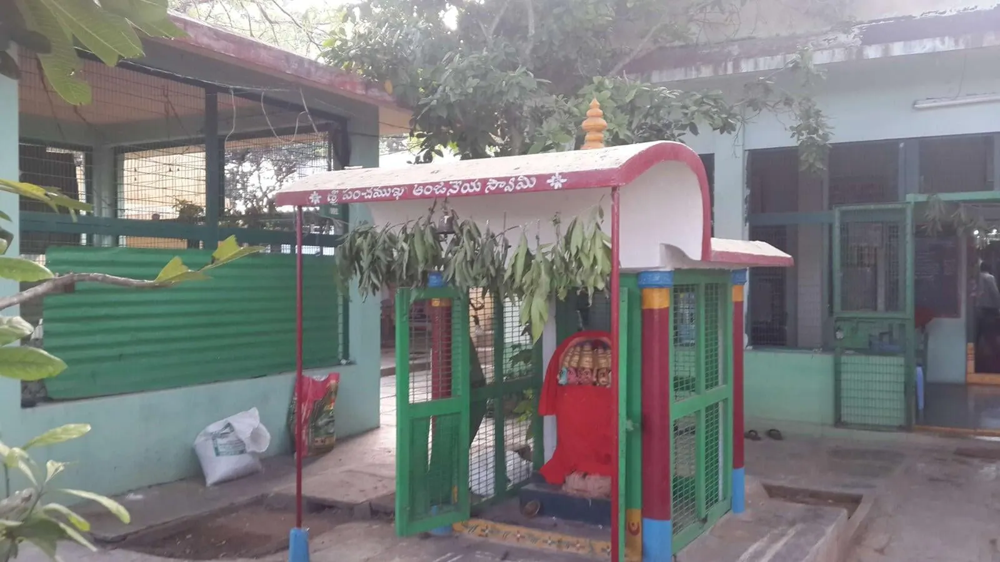
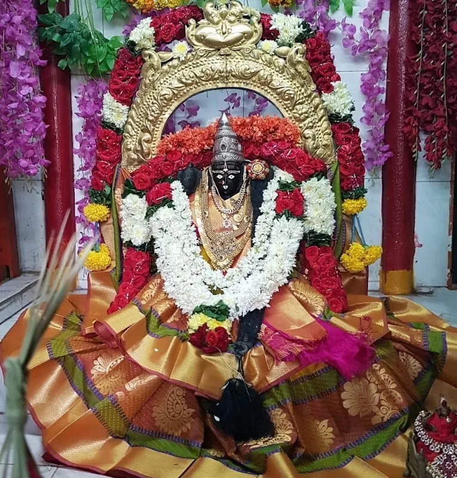

శ్రీ భువనేశ్వరి పీఠ ఆవిర్భావము
శ్రీ చిదానంద సరస్వతీ స్వాములవారి నిర్యాణము జరిగిన పిదప ధర్మకర్తలు సమావేశమై ఈ యాశ్రమమున ఆచార్య పీఠమును నెలకొల్ప నిశ్చయించిరి. ఒక యతీశ్వరుని పీఠాధిపతిగా జేసి గురు పరంపర కొనసాగింప సంకల్పించిరి. అందులకై ఆచార్యునిగూర్చి అన్వేషించిరి. ఆ సమయమున శ్రీ సత్యానంద భారతీ స్వామివారు విజయవాడలో తురీయాశ్రమము స్వీకరించినట్లు తెలియ వచ్చెను. ధర్మకర్తలు వారిని సమీపించి తమ యాశ్రమములో పీఠాధి పత్యము వహింప బ్రార్ధించిరి. వారంగీకరింప 14-11-1978న వారిని శ్రీ భువనేశ్వరీ పీఠమునకు అధిపతిగా పట్టాభిషేకము చేసిరి.

శ్రీ భువనేశ్వరి ఆలయం

అత్యంత తపోనిష్టాగరిష్టులైన ప.ప.శ్రీ.శ్రీ.శ్రీ చిదానంద సరస్వతి స్వామి వారు కీ॥శే॥ ద్రోణపల్లి అనంతపద్మనాభ చౌదరి గారు ఇచ్చిన దానభూమిలో 1952 సం.లో శ్రీ చిదానంద ఆశ్రమమును స్థాపించి, ఆనాటి శ్రీ శృంగేరి పీఠాధిపతుల ద్వారా పంపబడిన శ్రీ ఆదిశంకరాచార్యుల విగ్రహ ప్రతిష్ట చేసారు. ఈ ప్రాంగణమంతా అత్యంత మహిమాన్వితమైన నాగ క్షేత్రముగా ప్రసిద్ధి చెందినది.
అనంతర కాలంలో, 1978 నందు ధర్మకర్తలు ఆశ్రమమున గురుపరంపర కొనసాగిస్తూ ప.ప.శ్రీ.శ్రీ.శ్రీ సత్యానందభారతిస్వామి వారికి పీఠాధిపతిగా పట్టాభిషేకము చేసినారు. వీరు ఆశ్రమమున శ్రీచక్ర స్థాపన మరియు 1978 విజయదశమినాడు ప.ప.శ్రీ.శ్రీ.శ్రీ విమలానందభారతి స్వామివారు పంపిన శ్రీ భువనేశ్వరిమాత విగ్రహ ప్రతిష్ఠ చేసి పీఠమునకు శ్రీ భువనేశ్వరి పీఠము అని నామకరణము చేసారు.
ఆ పిమ్మట ఆశ్రమమునకు ప్రాకారము, ఋతు రసాగ్ని(367) లింగాత్మక రుద్ర మండలము, శ్రీ పంచముఖ ఆంజనేయ స్వామి మరియు శ్రీ నాగేంద్ర స్వామి ప్రతిష్టలు చేసి, షోడశ స్థంభ విలసిత శాశ్వత యాగశాల నిర్మాణము చేశారు. ఈ పీఠము శ్రీశృంగేరి శ్రీవిరూపాక్ష శ్రీపీఠాధ్యక్ష శ్రీకల్యాణానంద భారతీ సంప్రదాయమునకు చెందినది.
ఆనాటినుండి పీఠము నిత్యపూజలు, శ్రీ చక్ర నవావరణ ఆర్చనలు, ఉత్సవాలు, విశేష వైదిక ఆధ్యాత్మిక సామజిక కార్యక్రమములతో విలసిల్లుతున్నది. 1986లో స్వామివారి సిద్ధి అనంతరము ప.ప.శ్రీ.శ్రీ. శ్రీ చిదానంద భారతి స్వామి, ప.ప.శ్రీ.శ్రీ.శ్రీ ప్రకాశానందభారతి స్వామి, శ్రీ సత్యానందభారతి స్వామి-2 కాలగమనంలో పీఠాధిపతులుగా లోకకళ్యాణమునకై వివిధ కార్యక్రమాలు నిర్వహించుతూ మార్గదర్శనం చేశారు.
ప.ప.శ్రీ.శ్రీ.శ్రీ సిద్ధేశ్వరానంద భారతి స్వామి వారి వద్ద ప్రణవోపదేశం పొంది తురీయాశ్రమం స్వీకరించిన శ్రీ కమలానందభారతి స్వామి శ్రీఫ్లవ ఆశ్వయుజ శుద్ధ నవమి 2021 నాడు పీఠాధిపతులుగా నియుక్తి చేయబడ్డారు. స్వామివారు హిందూ ధర్మ వ్యాప్తి, పరిరక్షణ, సమాజ సంఘటన, ఉన్నతి కొరకు శ్రీ భువనేశ్వరి పీఠాధిపతిగా మార్గదర్శనం చేయుచున్నారు.
శ్రీ భువనేశ్వరి పీఠమున కార్యక్రమములు
- నిత్యము ప్రాతస్సాయములయందు శ్రీ చక్రార్చన, ప్రతి పూర్ణిమనాడు శ్రీ చక్రనవావరణార్చన, ప్రతి మాస శివరాత్రి రుద్రమండలమునకు మహన్యాస పూర్వక మహాభిషేకము.
- చైత్ర శుద్ధ పూర్ణిమ చిదానంద సరస్వతీ స్వామివారి జయంతి, ఆశ్రమ వార్షికోత్సవము.
- వైశాఖ శుద్ధ పంచమి శంకర జయంతి.
- వైశాఖ బ||దశమి హనుమజయంతి, కల్యాణోత్సవము.
- జ్యేష్ట శుద్ధ అష్టమి శ్రీ సత్యానంద భారతీ స్వామి వారి ఆరాధన.
- ఆషాఢ శుద్ధ పూర్ణిమ గురు పూజ, చతుర్మాస్యారంభము.
- శ్రావణ బహు పాడ్యమి శ్రీ కృష్ణ జయంతి.
- భాద్రపద శుద్ధ పాడ్యమి శ్రీ చిదానంద సరస్వతీ స్వామి వారి ఆరాధన.
- ఆశ్వయుజ శుద్ధ పాడ్యమి నుండి నవమి వరకు దేవి నవరాత్రోత్సవములు.
- నవరాత్రోత్సవములందు ప్రతి దినము శ్రీ చక్ర నవావరణార్చనలు - సువాసినీ పూజలు - కుమారి పూజలు - గోపూజ - కుంకుమార్చనలు - రుద్ర మండలాభిషేకము - చండీ యాగము మొదలైనవి.
- విజయ దశమి శ్రీ సత్యానంద భారతీస్వామి వారి జయంతి.
- ఆశ్వయుజ బహుళ సప్తమి శ్రీ భువనేశ్వరీదేవి జన్మదినోత్సవము.
- కార్తీక మాసము నెలరోజులు రుద్ర మండలమునకు మహాన్యాస పూర్వక మహాభిషేకములు.
- కార్తీక శు॥ పూర్ణిమ రాత్రి సహస్ర దీపోత్సవము - సమారాధనము.
- మార్గశిర శుద్ధ షష్ఠి శ్రీ సుబ్రహ్మణ్యేశ్వర కల్యాణము.
- మాఘ బ॥ చతుర్దశి మహా శివరాత్రి రుద్ర మండల మహాభిషేకము.
ఇవికాక ఇంకనూ విశేషదినములందు - ఆయా కార్యక్రమములు నిర్వహింపబడుచున్నవి.
శ్రీ భువనేశ్వరి ఆలయ పూజలు
శ్రీ శృంగేరి శ్రీ విరూపాక్ష శ్రీ పీఠాధ్యక్ష శ్రీ జగద్గురు శ్రీశ్రీశ్రీ కల్యాణానంద భారతి మహాస్వామి పరంపరా సముల్లసిత శ్రీభువనేశ్వరి పీఠంలో ప్రతినిత్యం ఉదయం - శ్రీచక్ర పూజ లలితా సహస్రనామములతో కుంకుమార్చన; సాయంత్రం - శ్రీదేవి ఖడ్గమాలతో కుంకుమార్చన; ప్రతి శుక్రవారం మరియు పౌర్ణమి - శ్రీచక్ర నవావరణార్చన; ప్రతి సోమవారము మరియు మాస శివరాత్రి - శ్రీ రుద్రమండలమునకు మహాన్యాస పూర్వక రుద్రాభిషేకము జరుగుతున్నవి. భక్తులందరికి స్వాగతం.
పై పూజా కార్యక్రమములలో మీ యొక్క గోత్రనామములతో పూజ జరిపించుకొనుటకై శుక్రవారము లేదా పౌర్ణమినాడు...